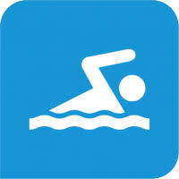

|
Uno de los ejercicios más completos para trabajar tu mente y cuerpo es la natación; te mantiene en forma, fortalece tus músculos y tu memoria, por lo que es recomendable que se practique a cualquier edad.
En el agua tus músculos trabajan de cinco a seis veces más que en tierra firme.
La natación aumenta tu masa muscular y la tonifica; alarga tus músculos y mejora tu silueta. Una hora de este ejercicio te permite quemar hasta 600 calorías.
|
 |
El deporte es una actividad que el ser humano realiza principalmente con objetivos recreativos aunque en algunos casos puede convertirse en la profesión de una persona si la misma se dedica de manera intensiva a ella y perfecciona su técnica y se realiza de manera permanente.
|